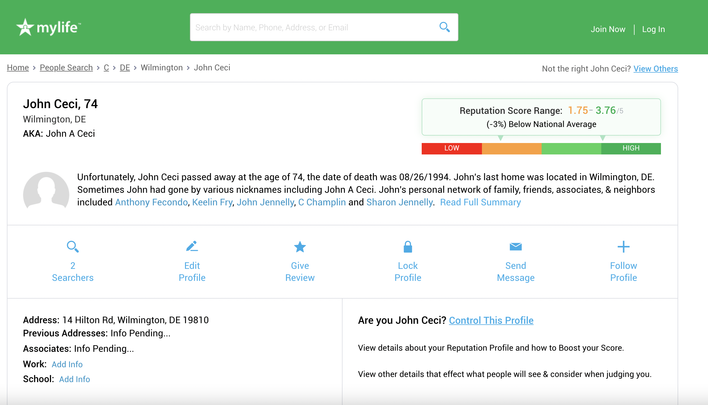

Sites that Publicize your Personal Data
(Generally only applicable to US-residing individuals)
I have always had a knack for online investigation.
Over my lifetime, many people have asked me to uncover records of their past lives by doing deep online searches.
During this work, I've stumbled across many sites that publicize our personal information without our knowledge. My goal is to spread awareness of these sites
and empower people to monitor the data posted about them online. Below are some of the sites I feel everyone should know about.
**Disclaimer: this guide also represents some work I did funded by a $400 Grant from Cornell's Contribution Project
Part I: Basic Contact Information
MyLife.com
This site gathers biographical details on people (birthdates, death dates, addresses, associated people, criminal charges, etc.) and freely displays them online.
(To get past the sign up wall and lengthy loading process, simply type mylife.com/firstname-lastname into your browser's URL bar to search for someone's record).
Information persists on this site long after someone dies.
See the screenshot of the record for my deceased grandfather.

Whitepages.com
This site also shows basic contact and location information for free, and I have found its information to be very accurate.
You can also use this page to do reverse searches, such as starting with a phone number to find the owner.
Spokeo.com
Spokeo functions much like the above sites, but provides less detail. However, it usually shows people's immediate family and relatives.
Spokeo was the subject of a report by ABCNews in 2010 warning consumers
Much of Spokeo's details have become blocked behind paywalls over time, but it is still worth checking out.
Part II: Historical Documents
Ancestry.com
Ancestry.com has become a well known geneaology site. It contains archived and scanned copies of original historical documents on people who live(d) in the US
Most of the services and documents require a free trial and then a subscription; however, you can still use this site to find some documents for free if they have been uploaded publicly.
You can also search several copies of the US Federal Census for free (latter 1800s and 1940). You can search for individuals' names to find their records in the censuses.
Classmates.com
Classmates has been one of my favorite sites for a long time because it shows thousands of high school yearbooks completely for free.
You can search for a specific town's or school's yearbook, then filter by decade. you can also search within the scanned yearbooks for someone's name.
Here is a screenshot of my great Uncle's senior year photo, from 1954.
Newspapers.com
Newspapers.com is one of my go-to sites for newspaper clippings. It lets you search for keywords and shows copies of US newspapers that mighth have matches.
They won't let you see much without a subscription; however, you can get around this by looking for clippings posted by others that match your search terms
Use Google's Advanced Search feature to do this: search for keywords and put the domain name as newspapers.com.
fultonhistory.com
This site is a completely free alternative to newspapers.com. It containes newspapers mainly from New York State, but also from other parts of the US.